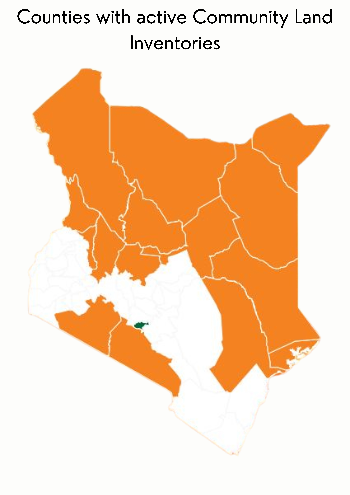
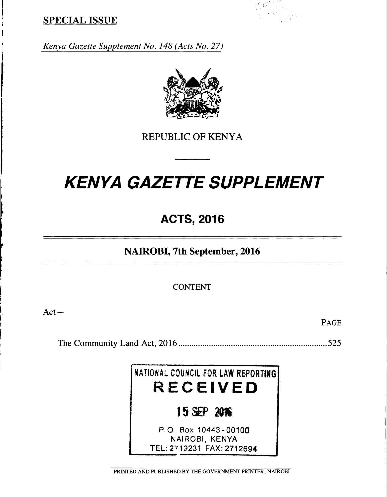
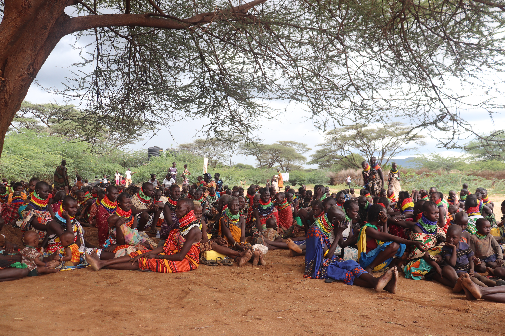
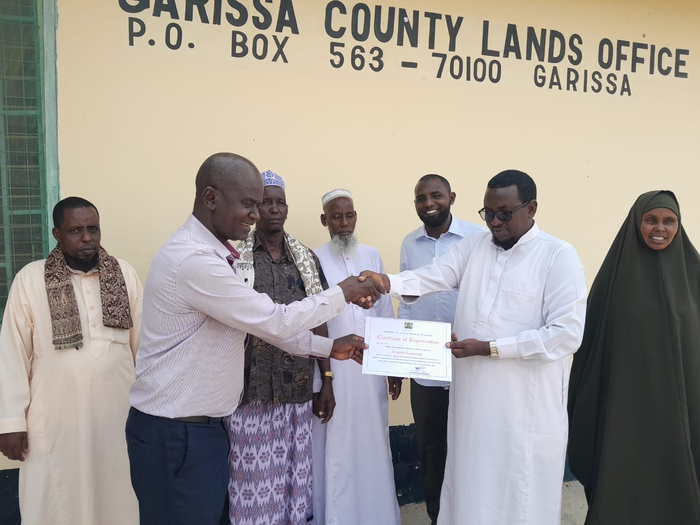
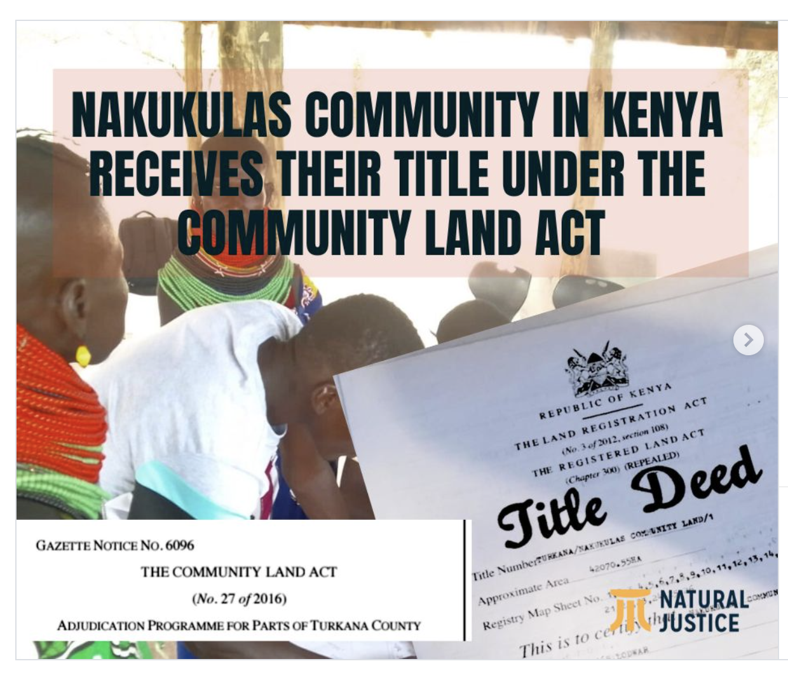

- 🌍Most community land holders are members of pastoral, indigenous, and rural communities — Kenya's most economically marginalized populations.
- ⚠️A decade after the Community Land Act was passed, the overwhelming majority of this land remains legally unregistered and unprotected.
- 📍Community land spans 24 counties — from Turkana and Marsabit in the north to Kilifi and Kwale on the coast.


- 📜Constitution of Kenya (2010), Article 63 — formally recognized community land as a distinct, protected category of land ownership for the first time.
- 📋Community Land Act No. 27 of 2016 — enacted to operationalize Article 63. Gave communities a legal pathway to register, own, and self-govern their land collectively.
- ⏱️The Act required the transition process to begin within 12 months of gazettement of its regulations. That deadline passed years ago with no national enforcement.
- 🏛️The Act promised communities the right to form Community Land Management Committees (CLMCs), adopt bylaws, and receive formal title deeds.
- 🔧NLC (Amendment) Act, 2025 — strengthens NLC oversight and requires review of all public land grants issued before 27 August 2010, with power to revoke irregular allocations.
- 🚨10 years on: the law exists. The land does not yet belong to the people it was written for.
The national average transition rate, standing at 15% as of July 2023, is slow — seven years after the enactment of the Community Land Act.


Progress by County
Top Barriers to Registration
- ⚡Internal conflicts among group members — cited in 39.7% of cases.
- 💸Financial constraints — communities cannot afford survey, adjudication, and legal costs. Cited in 22.5% of cases.
- 📢Lack of information on the transition process — cited in 20.6% of cases.
- 🗂️Registration procedural challenges — bureaucratic bottlenecks and delays — cited in 17.2% of cases.


The 4 Confirmed Titled Trust Land Communities


- 📜The law is clear: Constitution Articles 27 & 60 guarantee gender equality in land. The Community Land Act mandates at least one-third women representation in all CLMCs.
- 🚫Reality: A Kenya Land Alliance audit found that none of the community land inventories submitted by counties contain gender-disaggregated data.
- 🚫In Laikipia's Ilipolei community, women have reported being physically barred from community assembly meetings — the very meetings that determine land governance.
None of the community land inventories submitted by counties contain gender-disaggregated data — making it impossible to track women's involvement or ensure their rights are protected.


Carbon Markets
- 🌿Kenya's vast unregistered rangelands are being targeted for carbon offset projects — without community consent or defined legal rights to carbon revenues.
- ⚖️January 2025: The Environment and Land Court in Isiolo ruled that conservancies were established without adequate community participation on unregistered community land.
- 📋Kenya's new climate regulations do not yet define carbon rights — leaving communities legally exposed.
Extractives & Infrastructure
- 🛢️LAPSSET corridor, oil in Turkana, conservation projects — are proceeding on unregistered community land. The Nakukulas case shows communities can lose a decade of resource benefits without a title.
- 🏗️Unregistered community land has no legal protection against alienation.
Conservation Capture
- 🦁September 2025: The High Court revoked the Kamuthe Wildlife Conservancy licence in Garissa, finding it was established without adequate public participation. The community land title itself remains valid — proving proper process protects communities. → Daily Nation



In 2021, with support from DLCI and FCDC, the community embarked on the registration process under the Community Land Act 2016. The journey included community mobilisation, CLMC formation, public participation, adjudication, survey, and final gazettement. In 2023, Kamuthe made history: it became the first former trust land in Kenya to successfully transition to registered community land — gaining full legal ownership of 31,000 hectares.
The registration followed due process at every stage. This was later confirmed by the Environment and Land Court in September 2025, which stated: "the registration of Kamuthe community under the Act cannot be faulted as it was evident that due process was followed." While the KWS licence for a wildlife conservancy on Kamuthe land was revoked for lack of public participation, the community land title stands — a distinction that matters deeply for Kenya's registration movement.
Why Kamuthe Was Stuck — The Challenges Before Registration
- 🗺️Colonial-era trust land: Garissa County Government legally held the land — the community could not make binding decisions about their own territory.
- ⛏️Illegal mining and land grabbing: The absence of formal security allowed outside actors to exploit resources and grab land with impunity.
- 💧Resource conflicts: Recurring disputes over water and pasture, exacerbated by encroachment from outside the community.
- 💰Information asymmetry: The community was excluded from economic benefits derived from their own land — including compensation for resource extraction.
What Registration Unlocked
- ✅Full legal ownership of 31,000 hectares — the county government's trustee role has ceased.
- ✅A 10-year Land Use Plan (2024–2034) launched with USAID/KWCA support — balancing farming, conservation, and pastoralism.
- ✅Kamuthe became a national benchmarking site — communities from Garbatula, Kina and Sericho visited in May 2025 to learn from the process.
- ✅The court ruling affirming the validity of registration under due process strengthens the legal protection of all communities that follow proper procedure.
The Court Ruling — September 2025
- ⚖️The Environment and Land Court revoked the KWS licence for Kamuthe Wildlife Conservancy — ruling it was established without adequate public participation. → Daily Nation
- ✅Critically, the court upheld the community land registration itself — explicitly stating due process was followed. The title remains valid.
- 📌The ruling is a landmark for Kenya: it shows that conservation and extractive projects on community land must go through community approval — and that a strong title deed protects communities from being bypassed.
At the heart of this initiative and achievement is DLCI, which collaborates with various CSOs, county governments, and the Ministry of Land. The first beacon of this transformation was lit in Garissa County, where the Kamuthe community became the first former trust land group to receive a community title deed.



Registration began in 2017. The title deed was issued on February 27, 2025. The formal celebration was held on May 1, 2025 in Nakukulas village. Supported by Natural Justice, Turkana Extractives Consortium, Kenya Oil and Gas Working Group, and Pamoja Trust.
What Changed With the Title
- ✅The community is now legally recognized as both an entity and an owner.
- ✅In cases of compulsory land acquisition, the community will now be compensated directly.
- ✅The community can now negotiate directly with oil investors as a recognized landowner.
What the Title Did Not Resolve
- ⚠️A 2025 court case reveals the county government refuses to relinquish trustee powers even after title was issued. → Kenya Law
- ⚠️Lease revenues are allegedly being channelled into county budgets rather than to the communities.
Graves of our relatives — our primary evidence of land ownership — were not enough to negotiate compensation for land used for petroleum activities.


- 🏛️PS for Lands Nixon Korir at the October 2023 NLC-Namati report launch: acknowledged the process as "slow and inadequately resourced" and committed to channelling resources toward implementing the Community Land Act.
- 🏛️NLC Chairperson Gershom Otachi: said 14% "shows we are doing something but should do more" — calling for targeted sensitisation and adequate financial and human resource allocation.
- 📋NLC (Amendment) Act, 2025: Strengthens NLC powers and requires review of all public land grants issued before 27 August 2010.
- ✊Community response — November 2024: The Community Land Owners Association of Kenya (CLOAK) staged a protest march in Nairobi, presenting a petition to the National Assembly demanding MPs act on registration delays.
14% shows we are doing something but should do more. We need targeted, all-inclusive sensitisation and adequate financial and human resource allocation to achieve 100% transition.
| Data Point | Source | Year | Reliability |
|---|---|---|---|
| 14–15% group ranch transition rate | NLC-Namati Joint Report | 2023 | High |
| 46 of 315 group ranches titled | NLC-Namati / Eastleigh Voice | 2023 | High |
| 159 trust land parcels; 13 counties | Kenya Land Alliance / Daily Nation | 2025 | High |
| Kamuthe — first trust land titled (31,000 ha) — DLCI & FCDC supported | Kamuthe Conservancy · Garissa County · DLCI | 2023 | High |
| Kamuthe conservancy licence revoked; title upheld | Daily Nation · Eastleigh Voice | Sept 2025 | High |
| Nairimirimo — trust land titled, 27–28 Feb 2023 — DLCI & FCDC supported | DLCI campaign repository | 2023 | High |
| Arisim — trust land titled, 27–28 Feb 2023 — DLCI & FCDC supported | DLCI campaign repository | 2023 | High |
| Nakukulas title deed — 42,070 ha, 27 Feb 2025 | Natural Justice · Daily Nation | Feb 2025 | High |
| 3% of women hold individual title deeds | KDHS 2022 via KIPPRA | 2022 | High |
| 6–10 million Kenyans on community land | RRI / Namati (multiple) | 2020–2025 | Estimated range |
| 67% of landmass is community land | RRI / Multiple | 2020–2025 | Estimated |
★★ DLCI and FCDC roles in supporting Kamuthe, Nairimirimo, and Arisim registrations confirmed via DLCI July 2025 and DLCI campaign repository, May 2026.